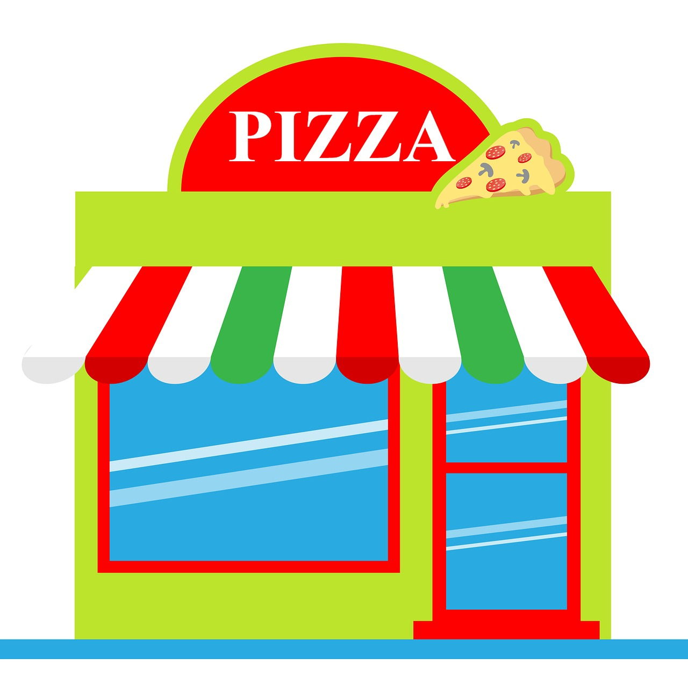

Home
Welcome to the most amazing pizza restraunt ever!

At Zac's Pizza restaurant we strive to make the finest quality pizzas in town.
Our chefs are professionally trained to give you only the best tasting pizza.
We use fresh ingredients to prepare meals that are crafted from scratch daily,
utilizing hand-stretched dough, our secret family recipe for rich marinara sauce,
and a premium blend of freshly grated mozzarella cheese that melts to absolute perfection.
Every single ingredient we source is selected with the utmost care to guarantee an unmatched
dining experience for your friends and family.
We believe a great meal brings people together, which is why we meticulously source every topping,
from crisp, hand-cut garden vegetables to savory,
slow-cured premium pepperoni slices. No matter what combination you choose,
every single slice is crafted with passion to ensure a robust burst of flavor in every bite.
Our commitment to culinary excellence means we never cut corners, delivering a consistently delicious,
golden-brown crust that will keep you coming back for more week after week.
Welcome to our family-owned pizzeria, where lifelong passion meets time-honored Italian tradition.
We bring the authentic taste of classic, brick-oven style pizza straight to the heart of your neighborhood,
offering a warm and inviting escape for food lovers of all ages. Every pizza we serve tells a story of heritage,
quality ingredients, and a deep, generational love for the craft of artisanal pizza making.
We take immense pride in preserving these classic methods while injecting our own creative flair into every dish.
Step inside our welcoming shop and instantly experience the comforting aroma of freshly baked dough,
roasting garlic, and simmering house-made pizza sauce.
Whether you are grabbing a quick, hot slice on your lunch break, ordering a massive feast for game day,
or bringing the whole family in for a relaxed sit-down dinner, we promise a cozy atmosphere and a memorable meal.
We treat every single customer like a member of our own family,
ensuring top-tier service from the moment you walk through our front doors.


True culinary perfection takes intense heat, precise timing, and unwavering dedication.
Our signature pizzas are baked directly on the glowing stone surface of a roaring, high-heat wood-fired oven.
This traditional cooking method instantly locks in moisture, creates a perfectly smoky flavor profile,
and cooks our pizzas to blistered, bubbly perfection in just a matter of minutes.
The intense radiant heat creates beautiful dark patches on the crust,
known to pizza enthusiasts worldwide as "leoparding," which signifies a perfectly baked dough.
We carefully monitor our fire throughout the day using premium,
seasoned hardwood to maintain the ideal temperature for that signature crispy-yet-chewy crust texture.
Watch our expert chefs toss the fresh dough high into the air, artfully arrange your favorite toppings,
and slide it directly into the dancing flames right from your table view.
This open-kitchen experience ensures your meal goes straight from the fire to your plate instantly,
guaranteeing maximum freshness, incredible warmth, and an authentic taste experience.